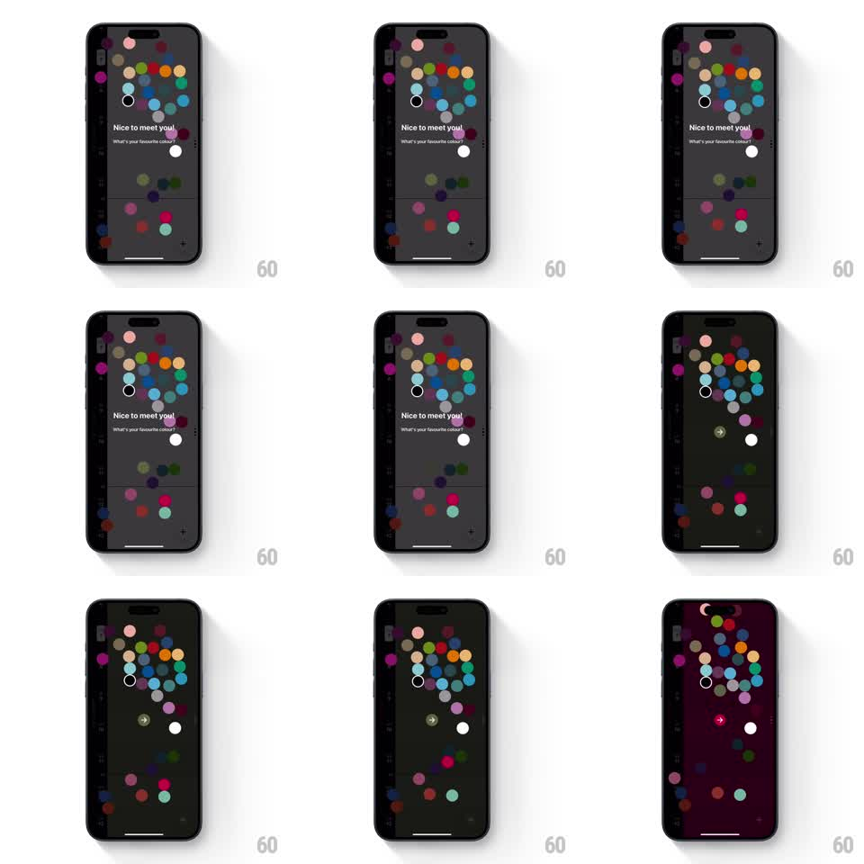

Media
Frame-by-frame

Rebuild this interaction 1:1: Timepage's color picker - tapping a color bubble washes the entire app's background theme to that color and reveals a contextual navigation button.

Rebuild this interaction 1:1: Timepage's color picker - tapping a color bubble washes the entire app's background theme to that color and reveals a contextual navigation button. Note: the pipeline's first-pass footage for this slug was a wrong video (Rain Alerts); the prompt is written for the corrected per-shot footage (Gumlet poster-asset video). ## Integration Integration: stack-agnostic spec - springs given as stiffness/damping, timed motions as duration + curve; map every value to your framework and animation library of choice. ## Scene A dark settings-style screen with a row (or field) of round color bubbles. Tapping one floods the whole app background with that color - text, accents, and chrome retint with it - and a navigation button (back/confirm) materializes in context. ## Motion spec Pattern: bubble-tap theme flood. - Tap a bubble: it pops (scale 0.9 to 1.15 to 1, spring ~420/22) and a color wave expands from the bubble's center across the screen (radial mask, ~450ms, ease-out), the background cross-mixing to the new hue as the wave passes. - Foreground elements retint on a short delay after the wave passes under them (60-100ms lag), so the color appears to wash through the hierarchy: background first, then cards, then text accents. - The selected bubble gains a ring/check (draws on, 200ms) while siblings desaturate slightly. - As the flood completes, the navigation button slides in (spring ~350/26) from the header edge, its tint sampled from the new theme. - Retapping another bubble re-floods from that bubble's position - the wave origin always follows the tap. ## Calibration - The wave is a color transition, not an overlay: end state must be the pure theme color, no residue. - Text contrast must be preserved per theme - retint logic swaps foreground values, not just background. ## Reduced motion Instant theme swap; button fades in. ## Don't miss - The flood originates at the tapped bubble, not screen center - the gesture and the wave are one event. - The navigation button only appears after a selection; before any tap, it's absent, not disabled.